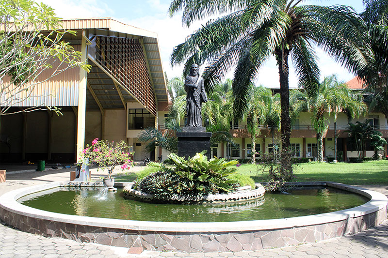
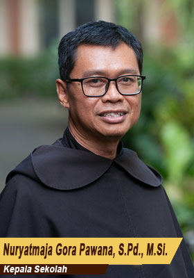

Profil SMAK Santo Paulus Jember
Identitas sekolah, perjalanan sejak 1951, visi-misi, Carmel Values, dan sosok kepala sekolah.
Sekolah Katolik dalam tradisi Karmelit.
SMA Katolik Santo Paulus Jember dikelola oleh Yayasan Sancta Maria Malang, unit pelayanan Ordo Karmel Provinsi Indonesia dalam bidang pendidikan. Situs resmi sekolah menjelaskan bahwa jejaring Karmelit membuka hubungan persaudaraan dan kerja sama dengan sekolah Karmelit di berbagai negara.

Dari 1951 menuju 75 tahun pelayanan pendidikan.
Perjalanan SMA Katolik Santo Paulus Jember terus berkembang sejak didirikan pada tahun 1951 hingga memasuki usia ke-75.
1 Agustus 1951
SMA Katolik Santo Paulus Jember berdiri pada 1 Agustus 1951.
2022
Akreditasi A tercatat dengan No. SK 1857/BAN-SM/SK/2022.
2026
Sekolah merayakan rangkaian HUT ke-75, termasuk reuni alumni dan kegiatan open house.
Visi & Misi
Visi resmi menempatkan Spiritualitas Karmel—doa, pelayanan, dan persaudaraan—sebagai landasan untuk membentuk pribadi utuh, dewasa, berkarakter, dan berkebinekaan.
Visi Sekolah
Menjadi komunitas pendidikan Katolik yang dijiwai Spiritualitas Karmel untuk menumbuhkembangkan kaum muda menjadi pribadi yang utuh, dewasa, berkarakter, dan berkebinekaan.
Fokus Misi
- Memberikan layanan pendidikan SMA berciri khas pendidikan Katolik.
- Mengakomodasi bakat, minat, dan kecepatan belajar yang beragam.
- Mendorong keunggulan akademik, nonakademik, literasi, numerasi, dan keterampilan abad 21.
- Mengembangkan nasionalisme, kebinekaan, profesionalisme pendidik, serta pengelolaan sekolah yang efektif.
- Mewujudkan lingkungan sekolah yang sehat, aman, nyaman, dan berteknologi tinggi.
Nilai yang menjadi bahasa bersama sekolah.

Kepemimpinan yang menempatkan karakter dan proses belajar sebagai satu kesatuan.
SMA Katolik Santo Paulus Jember dipimpin oleh Nuryatmaja Gora Pawana, S.Pd., M.Si. sebagai Kepala Sekolah.
Pada kegiatan DBL Roadshow 2026, beliau juga tercatat menyampaikan motivasi agar murid tidak mudah menyerah dan saling memberi dukungan dalam berprestasi.
Lihat kehidupan siswaData resmi sekolah.
Identitas
Nama: SMA Katolik Santo Paulus Jember
NPSN: 20523807
Status: Swasta
Jenjang: SMA
Lokasi
Alamat: Jl. Trunojoyo 22C
Kelurahan: Kepatihan
Kecamatan: Kaliwates
Kabupaten: Jember, Jawa Timur
Legal & Fasilitas Dasar
Akreditasi: A
Naungan: Yayasan Sancta Maria Malang
Luas tanah: 10.255 m²
Sumber listrik: PLN